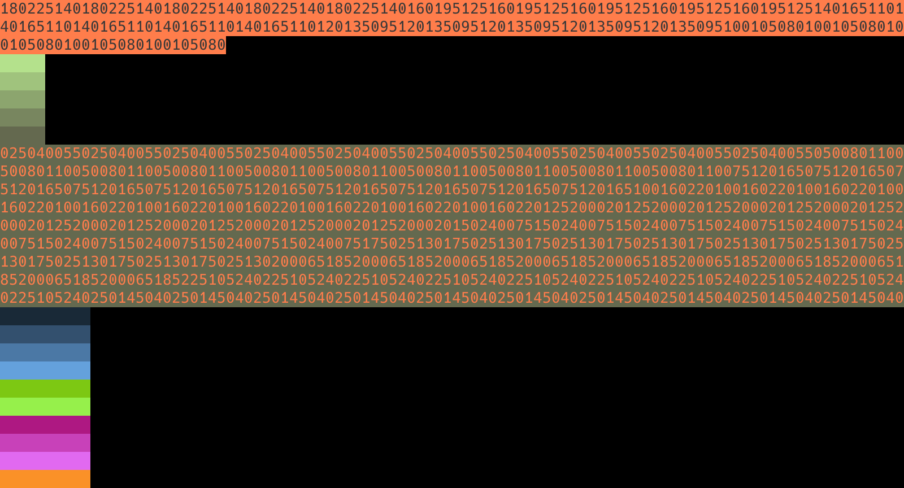

Après avoir généré le squelette pour la Semaine2, copiez/collez tout ce que vous aviez réalisé lors de la première semaine dans le fichier Semaine2 avant void algorithm().
Codage d'une image en couleurs (RGB)
Maintenant que l'on dispose de nos primitives pour manipuler les couleurs, nous allons pouvoir représenter une image. Pour cela, on choisit d'encoder une image comme une suite de pixels de couleurs. On se limite à des images carrées afin de ne pas avoir à définir la taille de l'image dans l'encodage.
Ainsi, une image 5x5 sera constituée de 25 pixels de couleurs mis les uns à la suite des autres dans une chaîne de caractères. Cela constituera donc une chaîne de 25x9 caractères puisque qu'une couleur est représentée par une chaîne de 9 caractères se décomposant en 3 caractères pour chaque couleur primaire.
Définition de int size(String image).
| Type de retour | Nom de la fonction | Paramètres |
|---|---|---|
int
| size
| (String image)
|
Retourne la taille de l'image passée en paramètre, c'est-à-dire son nombre de pixels en ligne (ou en colonne puisque l'image est carrée).
Exemples:
| ||
Il sera sûrement utile de mobiliser la fonction int sqrt(int number) qui calcule la racine carrée d'une nombre entier, si elle existe, et retourne -1 sinon (ce qui ne doit pas arriver normalement puisque les images sont carrées !).
Définition de get (String image, int line, int column).
| Type de retour | Nom de la fonction | Paramètres |
|---|---|---|
String
| get
| (String image, int line, int column)
|
Retourne l'indice de début du pixel située aux coordonnées (line, column) dans l'image.
Exemples:
| ||
Il peut être utile de comprendre que l'indice de colonne dépend de la taille d'un pixel alors que l'indice de ligne dépend de la taille d'une ligne (ie. le nombre de caractères sur une ligne).
Visualisation d'une image en couleurs dans le terminal !
Maintenant que nous disposons de nos briques de bases, nous pouvons les assembler pour créer facilement nos premières images. Pour cela nous allons définir une fonction générant une image pouvant produire des images initialisées avec une seule couleur ou avec des dégradés.
Définition de String generate(int size, int red, int green, int blue, int stepR, int stepG, int stepB).
| Type de retour | Nom de la fonction | Paramètres |
|---|---|---|
String
| generate
| (int size, int red, int green, int blue, int stepR, int stepG, stepB)
|
| Retourne une nouvelle image de `size x size` pixels dont la première ligne à la couleur `(red, green, blue)` et les suivantes un éventuel dégradé en fonction du pas `step` qui est appliqué sur les trois composantes (modulo 255 pour rester sur des couleurs valides !) à la fin de chaque ligne. | ||
Définition de void show(String image).
Pour visualiser notre image, il est nécessaire d'utiliser un terminal ANSI, c'est-à-dire un terminal capable d'interpréter certains codes, permettant de gérer notamment les couleurs.
Par chance, ijava propose une fonction String rgb(int red, int green, int blue, boolean foreground) permettant de créer un code ANSI pour basculer l'état des couleurs dans le terminal (soit le pinceau/foreground, soit l'arrière-plan/background). Il existe aussi une constante RESET pour réinitialiser les couleurs et revenir aux réglages standard.
Voici un l'algorithme principal que nous utiliserons pour créer nos premières images à l'aide des fonctions créées précédemment :
void algorithm() {
String image = generate(5, 200, 255, 155, -20, -30, -15);
println(rgb(255,125,75, false) + image + RESET);
show(image);
image = generate(10, 0, 0, 0, 25, 40, 55);
println(rgb(255,125,75, true) + image + RESET);
show(image);
}
Ainsi, le cours programme ci-dessous, permet de générer les images présentées ci-dessous :

| Type de retour | Nom de la fonction | Paramètres |
|---|---|---|
void
| show
| (String image)
|
Affiche sur le terminal l'image | ||